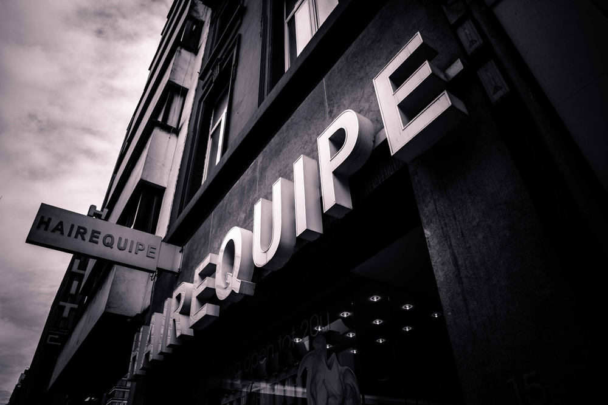
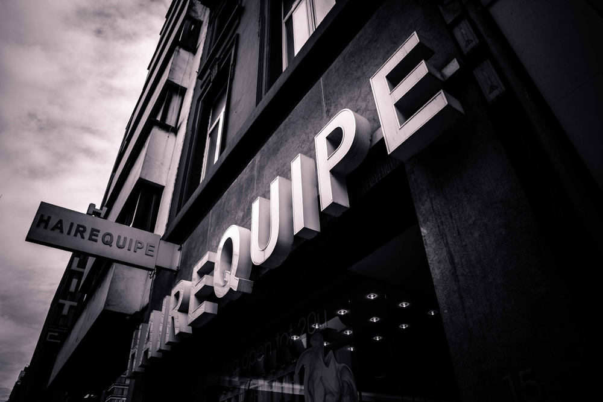

Services
Hairequipe zorgt ervoor dat u elke keer opnieuw naar huis gaat met uw droomkapsel. Ons complete team is specifiek opgeleid en kan zowel mannen en vrouwen, maar ook kinderen het perfecte kapsel geven.
Hairequipe, een waaier aan mogelijkheden
Een perfecte snit, brushing, permanent, kleuring, balayage, verzorging en nog veel meer! Het professionele Hairequipe team bezorgt u steeds weer een snit, brushing of kleuring op maat en is altijd als eerste op de hoogte van de nieuwste trends.
Balayage
Duizelingwekkend! Vlammende en merkbare kleuren dankzij Balayages die beweging geven aan jouw haar, elke dag weer! Zij lopen als licht én schaduw vlekkeloos in elkaar over. Je kan gaan voor een ultranatuurlijk effect, een zonaccent dat licht geeft aan blond én lichtbruin haar. Dit in een recordtijd van 15min. én zonder ammoniak.
Balayages zorgen voor iets meer contrasterende en tekenende effecten. Alles is mogelijk bij Hairequipe. Wij zorgen voor jouw glamour look en vrouwelijkheid zonder je haar volledig te kleuren. Kom snel eens naar één van de Hairequipe salons en gun je haar de verzorging die het nodig heeft.
Extensions
Droom jij ook van lange verleidelijke lokken? Het Hairequipe team is speciaal opgeleid om op een natuurlijke manier haar extensions te zetten. Iemand die je niet kent, zal niet merken dat je hairextensions hebt, zo natuurlijk zien ze eruit.
Wil je daarnaast ook meer volume in je haar? Met de hairextensions van Hairequipe krijg je de volle volumineuze haardos waar je altijd al van droomde. Bovendien zijn de extensions die we bij Hairequipe gebruiken enkel en alleen van de beste kwaliteit.
Wilt u graag meer weten over wat de mogelijkheden zijn voor u? Onze professionals staan altijd klaar om u meer informatie te geven over onze hairextensions! Neem snel contact op met ons of breng een bezoekje aan één van onze talrijke kapsalons.
Kerastase verzorging
Hairequipe draagt zorg voor je haar, met een Kérastase verzorging
Een Kérastase verzorging biedt je de ultieme haarverzorging. De Kérastase collectie bestaat uit unieke producten met innovatieve bestanddelen die het beste in uw haar naar boven brengen.
Eerst bepalen de Hairequipe professionals de structuur en de conditie van uw haar, zodat ze het juiste product kunnen selecteren uit de uitgebreide Kérastase Verzorgingscollectie met producten zoals Kérastase Verzorging Dermo Calm, voor een gevoelige hoofdhuid, Kérastase Verzorging Nutritive, voor droog en gevoelig haar, de Resistance producten van Kérastase Verzorging en nog veel meer.
Hairequipe zet alles op alles voor het welzijn van jouw haar! Kom snel naar één van onze talrijke salons en laat uw haar tot in de puntjes verzorgen met een Kérastase verzorging.
Permanent
Ben je je stijl haar beu en wil je je haar permanent golvend hebben? Bij Hairequipe kan je een prachtige permanent laten zetten.
Is een permanent iets voor jou? Het professionele Hairequipe team zorgt er altijd voor dat jouw kapsel bij jouw persoonlijkheid en bij jouw haartype past. Kom dus snel eens langs en vraag advies aan ons team van experts!
Snit-kapsels
Wordt het tijd voor een nieuw kapsel, maar heb je geen inspiratie? Geen enkel probleem! Het professionele Hairequipe team weet elk kapsel om te toveren in een succes. Korte snit kapsels, middellange snit kapsels of lange snit kapsels, krullen of stijl haar, er is geen enkel kapsel dat Hairequipe niet perfect kan knippen.
Ons Hairequipe team wordt steeds bijgeschoold en opgevolgd door onze gekwalificeerde experts van de Hairequipe academie die de nieuwste trends en modetendensen op de voet volgen.
Don’t wait, let us inspire you! Bij Hairequipe kan je er zeker van zijn dat je droomkapsel werkelijkheid wordt!